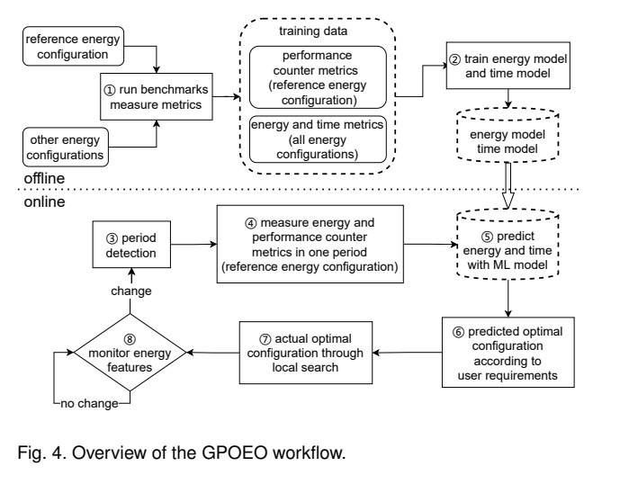
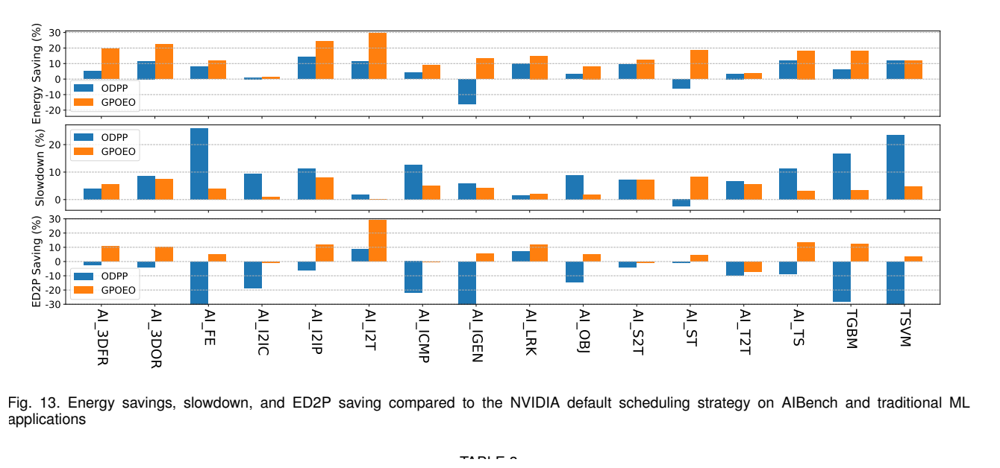
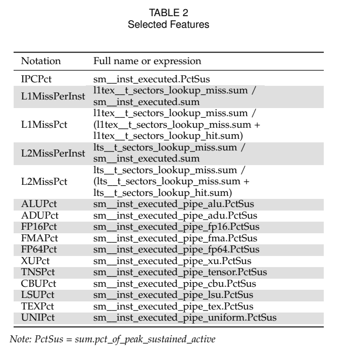

GPOEO：预测＋局部搜索：原图原表阅读索引#
整理日期：2026-11-06。读者原创中文解读；原图归论文作者／出版方。未运行作者实验，不是独立复现。
覆盖范围： 本版本正文中识别到的22项图、表或算法；保留原编号。关键项已裁图并在技术精读相应段落出现，未内嵌的项可点PDF页链接查看，不上传整篇PDF。
统计总边界： 训练数据每测10次平均不等于最终71工作负载每项都有10次独立重复。Fig9–12主要为预测误差分布，不是节能效果。两个测试分组的mean与全体mean不同。控制开销作者消融全系统但不调频，Fig15开销<4%；探索期间违反5%约束需要单列。
Fig1：oracle机会#
- 本项回答的问题： oracle机会，用于支撑这条方法或实验链中的具体环节。
- 组成、坐标和对照： 先读图题、图例、坐标/表头与单位，再在同一负载和同一基线内比较。已知最优上界不是部署结果。 按原图／表标示的单位与归一化基准阅读；不将不同子图或不同分母的柱高直接相除。 颜色按原图图例辨认，不能把同色跨图视为同一组。
- 阅读顺序与统计单位： 先看设定、单位和图例，再看趋势与作者正文。重复次数及采样独立性参见本篇技术精读统计节；没有为该图定位到的误差线定义／独立重复数，不另行猜测。
- 直接观察： 已知最优上界不是部署结果。
- 作者解释的范围： 原文以该图／表作为上述观察的结构说明或实验支撑，需连同对应页正文读取；本索引不额外替作者推导因果机制。
- 独立判断（AI分析）： 只支持此图所列的模型、设备、输入与测量口径；已知最优上界不是部署结果。 不能由单图推出E902或其他GPU的同幅收益。
- 证据链位置： 性能验证／定量或示例证据，需结合实验条件。它支持本文具体条件下的实现或结果，不单独完成跨平台验证。
- 结论与强度： 可复述“已知最优上界不是部署结果。”；对图内描述的核查可信度高，对未做独立实验的泛化判断为中或无法判断。不能得出的结论是“只支持此图所列的模型、设备、输入与测量口径；已知最优上界不是部署结果。 不能由单图推出E902或其他GPU的同幅收益。”所排除的外推。
Fig2：周期检测误差#
- 本项回答的问题： 周期检测误差，用于支撑这条方法或实验链中的具体环节。
- 组成、坐标和对照： 先读图题、图例、坐标/表头与单位，再在同一负载和同一基线内比较。低频局部重复可能误导FFT。 按原图／表标示的单位与归一化基准阅读；不将不同子图或不同分母的柱高直接相除。 颜色按原图图例辨认，不能把同色跨图视为同一组。
- 阅读顺序与统计单位： 先看设定、单位和图例，再看趋势与作者正文。重复次数及采样独立性参见本篇技术精读统计节；没有为该图定位到的误差线定义／独立重复数，不另行猜测。
- 直接观察： 低频局部重复可能误导FFT。
- 作者解释的范围： 原文以该图／表作为上述观察的结构说明或实验支撑，需连同对应页正文读取；本索引不额外替作者推导因果机制。
- 独立判断（AI分析）： 只支持此图所列的模型、设备、输入与测量口径；低频局部重复可能误导FFT。 不能由单图推出E902或其他GPU的同幅收益。
- 证据链位置： 性能验证／定量或示例证据，需结合实验条件。它支持本文具体条件下的实现或结果，不单独完成跨平台验证。
- 结论与强度： 可复述“低频局部重复可能误导FFT。”；对图内描述的核查可信度高，对未做独立实验的泛化判断为中或无法判断。不能得出的结论是“只支持此图所列的模型、设备、输入与测量口径；低频局部重复可能误导FFT。 不能由单图推出E902或其他GPU的同幅收益。”所排除的外推。
Fig3：利用率不足以区分任务#
- 本项回答的问题： 利用率不足以区分任务，用于支撑这条方法或实验链中的具体环节。
- 组成、坐标和对照： 先读图题、图例、坐标/表头与单位，再在同一负载和同一基线内比较。相似粗特征不等于相同选频。 按原图／表标示的单位与归一化基准阅读；不将不同子图或不同分母的柱高直接相除。 颜色按原图图例辨认，不能把同色跨图视为同一组。
- 阅读顺序与统计单位： 先看设定、单位和图例，再看趋势与作者正文。重复次数及采样独立性参见本篇技术精读统计节；没有为该图定位到的误差线定义／独立重复数，不另行猜测。
- 直接观察： 相似粗特征不等于相同选频。
- 作者解释的范围： 原文以该图／表作为上述观察的结构说明或实验支撑，需连同对应页正文读取；本索引不额外替作者推导因果机制。
- 独立判断（AI分析）： 只支持此图所列的模型、设备、输入与测量口径；相似粗特征不等于相同选频。 不能由单图推出E902或其他GPU的同幅收益。
- 证据链位置： 性能验证／定量或示例证据，需结合实验条件。它支持本文具体条件下的实现或结果，不单独完成跨平台验证。
- 结论与强度： 可复述“相似粗特征不等于相同选频。”；对图内描述的核查可信度高，对未做独立实验的泛化判断为中或无法判断。不能得出的结论是“只支持此图所列的模型、设备、输入与测量口径；相似粗特征不等于相同选频。 不能由单图推出E902或其他GPU的同幅收益。”所排除的外推。
Fig4：GPOEO流程#


- 本项回答的问题： GPOEO流程，用于支撑这条方法或实验链中的具体环节。
- 组成、坐标和对照： 先读图题、图例、坐标/表头与单位，再在同一负载和同一基线内比较。预测后仍有在线搜索。 结构／流程类没有统一数值坐标；箭头表示数据或控制关系，不表示统计因果。 颜色按原图图例辨认，不能把同色跨图视为同一组。
- 阅读顺序与统计单位： 先看设定、单位和图例，再看趋势与作者正文。重复次数及采样独立性参见本篇技术精读统计节；没有为该图定位到的误差线定义／独立重复数，不另行猜测。
- 直接观察： 预测后仍有在线搜索。
- 作者解释的范围： 原文以该图／表作为上述观察的结构说明或实验支撑，需连同对应页正文读取；本索引不额外替作者推导因果机制。
- 独立判断（AI分析）： 只支持此图所列的模型、设备、输入与测量口径；预测后仍有在线搜索。 不能由单图推出E902或其他GPU的同幅收益。
- 证据链位置： 方法／系统实现说明。它支持本文具体条件下的实现或结果，不单独完成跨平台验证。
- 结论与强度： 可复述“预测后仍有在线搜索。”；对图内描述的核查可信度高，对未做独立实验的泛化判断为中或无法判断。不能得出的结论是“只支持此图所列的模型、设备、输入与测量口径；预测后仍有在线搜索。 不能由单图推出E902或其他GPU的同幅收益。”所排除的外推。
Fig5：周期检测全任务#
- 本项回答的问题： 周期检测全任务，用于支撑这条方法或实验链中的具体环节。
- 组成、坐标和对照： 先读图题、图例、坐标/表头与单位，再在同一负载和同一基线内比较。比较GPOEO与ODPP的误差。 按原图／表标示的单位与归一化基准阅读；不将不同子图或不同分母的柱高直接相除。 颜色按原图图例辨认，不能把同色跨图视为同一组。
- 阅读顺序与统计单位： 先看设定、单位和图例，再看趋势与作者正文。重复次数及采样独立性参见本篇技术精读统计节；没有为该图定位到的误差线定义／独立重复数，不另行猜测。
- 直接观察： 比较GPOEO与ODPP的误差。
- 作者解释的范围： 原文以该图／表作为上述观察的结构说明或实验支撑，需连同对应页正文读取；本索引不额外替作者推导因果机制。
- 独立判断（AI分析）： 只支持此图所列的模型、设备、输入与测量口径；比较GPOEO与ODPP的误差。 不能由单图推出E902或其他GPU的同幅收益。
- 证据链位置： 性能验证／定量或示例证据，需结合实验条件。它支持本文具体条件下的实现或结果，不单独完成跨平台验证。
- 结论与强度： 可复述“比较GPOEO与ODPP的误差。”；对图内描述的核查可信度高，对未做独立实验的泛化判断为中或无法判断。不能得出的结论是“只支持此图所列的模型、设备、输入与测量口径；比较GPOEO与ODPP的误差。 不能由单图推出E902或其他GPU的同幅收益。”所排除的外推。
Fig6：CLB-GAT周期敏感性#
- 本项回答的问题： CLB-GAT周期敏感性，用于支撑这条方法或实验链中的具体环节。
- 组成、坐标和对照： 先读图题、图例、坐标/表头与单位，再在同一负载和同一基线内比较。跨SM频率检测稳定性。 按原图／表标示的单位与归一化基准阅读；不将不同子图或不同分母的柱高直接相除。 颜色按原图图例辨认，不能把同色跨图视为同一组。
- 阅读顺序与统计单位： 先看设定、单位和图例，再看趋势与作者正文。重复次数及采样独立性参见本篇技术精读统计节；没有为该图定位到的误差线定义／独立重复数，不另行猜测。
- 直接观察： 跨SM频率检测稳定性。
- 作者解释的范围： 原文以该图／表作为上述观察的结构说明或实验支撑，需连同对应页正文读取；本索引不额外替作者推导因果机制。
- 独立判断（AI分析）： 只支持此图所列的模型、设备、输入与测量口径；跨SM频率检测稳定性。 不能由单图推出E902或其他GPU的同幅收益。
- 证据链位置： 性能验证／定量或示例证据，需结合实验条件。它支持本文具体条件下的实现或结果，不单独完成跨平台验证。
- 结论与强度： 可复述“跨SM频率检测稳定性。”；对图内描述的核查可信度高，对未做独立实验的泛化判断为中或无法判断。不能得出的结论是“只支持此图所列的模型、设备、输入与测量口径；跨SM频率检测稳定性。 不能由单图推出E902或其他GPU的同幅收益。”所排除的外推。
Fig7：SBM周期敏感性#
- 本项回答的问题： SBM周期敏感性，用于支撑这条方法或实验链中的具体环节。
- 组成、坐标和对照： 先读图题、图例、坐标/表头与单位，再在同一负载和同一基线内比较。并非只在默认档有效。 按原图／表标示的单位与归一化基准阅读；不将不同子图或不同分母的柱高直接相除。 颜色按原图图例辨认，不能把同色跨图视为同一组。
- 阅读顺序与统计单位： 先看设定、单位和图例，再看趋势与作者正文。重复次数及采样独立性参见本篇技术精读统计节；没有为该图定位到的误差线定义／独立重复数，不另行猜测。
- 直接观察： 并非只在默认档有效。
- 作者解释的范围： 原文以该图／表作为上述观察的结构说明或实验支撑，需连同对应页正文读取；本索引不额外替作者推导因果机制。
- 独立判断（AI分析）： 只支持此图所列的模型、设备、输入与测量口径；并非只在默认档有效。 不能由单图推出E902或其他GPU的同幅收益。
- 证据链位置： 性能验证／定量或示例证据，需结合实验条件。它支持本文具体条件下的实现或结果，不单独完成跨平台验证。
- 结论与强度： 可复述“并非只在默认档有效。”；对图内描述的核查可信度高，对未做独立实验的泛化判断为中或无法判断。不能得出的结论是“只支持此图所列的模型、设备、输入与测量口径；并非只在默认档有效。 不能由单图推出E902或其他GPU的同幅收益。”所排除的外推。
Fig8：TSP周期敏感性#
- 本项回答的问题： TSP周期敏感性，用于支撑这条方法或实验链中的具体环节。
- 组成、坐标和对照： 先读图题、图例、坐标/表头与单位，再在同一负载和同一基线内比较。ODPP可能检测到局部短周期。 按原图／表标示的单位与归一化基准阅读；不将不同子图或不同分母的柱高直接相除。 颜色按原图图例辨认，不能把同色跨图视为同一组。
- 阅读顺序与统计单位： 先看设定、单位和图例，再看趋势与作者正文。重复次数及采样独立性参见本篇技术精读统计节；没有为该图定位到的误差线定义／独立重复数，不另行猜测。
- 直接观察： ODPP可能检测到局部短周期。
- 作者解释的范围： 原文以该图／表作为上述观察的结构说明或实验支撑，需连同对应页正文读取；本索引不额外替作者推导因果机制。
- 独立判断（AI分析）： 只支持此图所列的模型、设备、输入与测量口径；ODPP可能检测到局部短周期。 不能由单图推出E902或其他GPU的同幅收益。
- 证据链位置： 性能验证／定量或示例证据，需结合实验条件。它支持本文具体条件下的实现或结果，不单独完成跨平台验证。
- 结论与强度： 可复述“ODPP可能检测到局部短周期。”；对图内描述的核查可信度高，对未做独立实验的泛化判断为中或无法判断。不能得出的结论是“只支持此图所列的模型、设备、输入与测量口径；ODPP可能检测到局部短周期。 不能由单图推出E902或其他GPU的同幅收益。”所排除的外推。
Fig9：按SM档分组预测误差#
- 本项回答的问题： 按SM档分组预测误差，用于支撑这条方法或实验链中的具体环节。
- 组成、坐标和对照： 先读图题、图例、坐标/表头与单位，再在同一负载和同一基线内比较。箱线图误差不是节能。 按原图／表标示的单位与归一化基准阅读；不将不同子图或不同分母的柱高直接相除。 颜色按原图图例辨认，不能把同色跨图视为同一组。
- 阅读顺序与统计单位： 先看设定、单位和图例，再看趋势与作者正文。重复次数及采样独立性参见本篇技术精读统计节；没有为该图定位到的误差线定义／独立重复数，不另行猜测。
- 直接观察： 箱线图误差不是节能。
- 作者解释的范围： 原文以该图／表作为上述观察的结构说明或实验支撑，需连同对应页正文读取；本索引不额外替作者推导因果机制。
- 独立判断（AI分析）： 只支持此图所列的模型、设备、输入与测量口径；箱线图误差不是节能。 不能由单图推出E902或其他GPU的同幅收益。
- 证据链位置： 性能验证／定量或示例证据，需结合实验条件。它支持本文具体条件下的实现或结果，不单独完成跨平台验证。
- 结论与强度： 可复述“箱线图误差不是节能。”；对图内描述的核查可信度高，对未做独立实验的泛化判断为中或无法判断。不能得出的结论是“只支持此图所列的模型、设备、输入与测量口径；箱线图误差不是节能。 不能由单图推出E902或其他GPU的同幅收益。”所排除的外推。
Fig10：按数据集分组预测误差#
- 本项回答的问题： 按数据集分组预测误差，用于支撑这条方法或实验链中的具体环节。
- 组成、坐标和对照： 先读图题、图例、坐标/表头与单位，再在同一负载和同一基线内比较。检验跨任务泛化。 按原图／表标示的单位与归一化基准阅读；不将不同子图或不同分母的柱高直接相除。 颜色按原图图例辨认，不能把同色跨图视为同一组。
- 阅读顺序与统计单位： 先看设定、单位和图例，再看趋势与作者正文。重复次数及采样独立性参见本篇技术精读统计节；没有为该图定位到的误差线定义／独立重复数，不另行猜测。
- 直接观察： 检验跨任务泛化。
- 作者解释的范围： 原文以该图／表作为上述观察的结构说明或实验支撑，需连同对应页正文读取；本索引不额外替作者推导因果机制。
- 独立判断（AI分析）： 只支持此图所列的模型、设备、输入与测量口径；检验跨任务泛化。 不能由单图推出E902或其他GPU的同幅收益。
- 证据链位置： 性能验证／定量或示例证据，需结合实验条件。它支持本文具体条件下的实现或结果，不单独完成跨平台验证。
- 结论与强度： 可复述“检验跨任务泛化。”；对图内描述的核查可信度高，对未做独立实验的泛化判断为中或无法判断。不能得出的结论是“只支持此图所列的模型、设备、输入与测量口径；检验跨任务泛化。 不能由单图推出E902或其他GPU的同幅收益。”所排除的外推。
Fig11：显存预测误差#
- 本项回答的问题： 显存预测误差，用于支撑这条方法或实验链中的具体环节。
- 组成、坐标和对照： 先读图题、图例、坐标/表头与单位，再在同一负载和同一基线内比较。先确认E/T两个子图。 按原图／表标示的单位与归一化基准阅读；不将不同子图或不同分母的柱高直接相除。 颜色按原图图例辨认，不能把同色跨图视为同一组。
- 阅读顺序与统计单位： 先看设定、单位和图例，再看趋势与作者正文。重复次数及采样独立性参见本篇技术精读统计节；没有为该图定位到的误差线定义／独立重复数，不另行猜测。
- 直接观察： 先确认E/T两个子图。
- 作者解释的范围： 原文以该图／表作为上述观察的结构说明或实验支撑，需连同对应页正文读取；本索引不额外替作者推导因果机制。
- 独立判断（AI分析）： 只支持此图所列的模型、设备、输入与测量口径；先确认E/T两个子图。 不能由单图推出E902或其他GPU的同幅收益。
- 证据链位置： 性能验证／定量或示例证据，需结合实验条件。它支持本文具体条件下的实现或结果，不单独完成跨平台验证。
- 结论与强度： 可复述“先确认E/T两个子图。”；对图内描述的核查可信度高，对未做独立实验的泛化判断为中或无法判断。不能得出的结论是“只支持此图所列的模型、设备、输入与测量口径；先确认E/T两个子图。 不能由单图推出E902或其他GPU的同幅收益。”所排除的外推。
Fig12：显存档误差分布#
- 本项回答的问题： 显存档误差分布，用于支撑这条方法或实验链中的具体环节。
- 组成、坐标和对照： 先读图题、图例、坐标/表头与单位，再在同一负载和同一基线内比较。不同显存区间风险不同。 按原图／表标示的单位与归一化基准阅读；不将不同子图或不同分母的柱高直接相除。 颜色按原图图例辨认，不能把同色跨图视为同一组。
- 阅读顺序与统计单位： 先看设定、单位和图例，再看趋势与作者正文。重复次数及采样独立性参见本篇技术精读统计节；没有为该图定位到的误差线定义／独立重复数，不另行猜测。
- 直接观察： 不同显存区间风险不同。
- 作者解释的范围： 原文以该图／表作为上述观察的结构说明或实验支撑，需连同对应页正文读取；本索引不额外替作者推导因果机制。
- 独立判断（AI分析）： 只支持此图所列的模型、设备、输入与测量口径；不同显存区间风险不同。 不能由单图推出E902或其他GPU的同幅收益。
- 证据链位置： 性能验证／定量或示例证据，需结合实验条件。它支持本文具体条件下的实现或结果，不单独完成跨平台验证。
- 结论与强度： 可复述“不同显存区间风险不同。”；对图内描述的核查可信度高，对未做独立实验的泛化判断为中或无法判断。不能得出的结论是“只支持此图所列的模型、设备、输入与测量口径；不同显存区间风险不同。 不能由单图推出E902或其他GPU的同幅收益。”所排除的外推。
Fig13：16任务能量/时间/ED²P#


- 本项回答的问题： 16任务能量/时间/ED²P，用于支撑这条方法或实验链中的具体环节。
- 组成、坐标和对照： 先读图题、图例、坐标/表头与单位，再在同一负载和同一基线内比较。三行配对才可判断。 按原图／表标示的单位与归一化基准阅读；不将不同子图或不同分母的柱高直接相除。 颜色按原图图例辨认，不能把同色跨图视为同一组。
- 阅读顺序与统计单位： 先看设定、单位和图例，再看趋势与作者正文。重复次数及采样独立性参见本篇技术精读统计节；没有为该图定位到的误差线定义／独立重复数，不另行猜测。
- 直接观察： 三行配对才可判断。
- 作者解释的范围： 原文以该图／表作为上述观察的结构说明或实验支撑，需连同对应页正文读取；本索引不额外替作者推导因果机制。
- 独立判断（AI分析）： 只支持此图所列的模型、设备、输入与测量口径；三行配对才可判断。 不能由单图推出E902或其他GPU的同幅收益。
- 证据链位置： 性能验证／定量或示例证据，需结合实验条件。它支持本文具体条件下的实现或结果，不单独完成跨平台验证。
- 结论与强度： 可复述“三行配对才可判断。”；对图内描述的核查可信度高，对未做独立实验的泛化判断为中或无法判断。不能得出的结论是“只支持此图所列的模型、设备、输入与测量口径；三行配对才可判断。 不能由单图推出E902或其他GPU的同幅收益。”所排除的外推。
Fig14：55GNN三指标#
- 本项回答的问题： 55GNN三指标，用于支撑这条方法或实验链中的具体环节。
- 组成、坐标和对照： 先读图题、图例、坐标/表头与单位，再在同一负载和同一基线内比较。有些任务slowdown超阈值。 按原图／表标示的单位与归一化基准阅读；不将不同子图或不同分母的柱高直接相除。 颜色按原图图例辨认，不能把同色跨图视为同一组。
- 阅读顺序与统计单位： 先看设定、单位和图例，再看趋势与作者正文。重复次数及采样独立性参见本篇技术精读统计节；没有为该图定位到的误差线定义／独立重复数，不另行猜测。
- 直接观察： 有些任务slowdown超阈值。
- 作者解释的范围： 原文以该图／表作为上述观察的结构说明或实验支撑，需连同对应页正文读取；本索引不额外替作者推导因果机制。
- 独立判断（AI分析）： 只支持此图所列的模型、设备、输入与测量口径；有些任务slowdown超阈值。 不能由单图推出E902或其他GPU的同幅收益。
- 证据链位置： 性能验证／定量或示例证据，需结合实验条件。它支持本文具体条件下的实现或结果，不单独完成跨平台验证。
- 结论与强度： 可复述“有些任务slowdown超阈值。”；对图内描述的核查可信度高，对未做独立实验的泛化判断为中或无法判断。不能得出的结论是“只支持此图所列的模型、设备、输入与测量口径；有些任务slowdown超阈值。 不能由单图推出E902或其他GPU的同幅收益。”所排除的外推。
Fig15：系统开销#
- 本项回答的问题： 系统开销，用于支撑这条方法或实验链中的具体环节。
- 组成、坐标和对照： 先读图题、图例、坐标/表头与单位，再在同一负载和同一基线内比较。不调频的控制组件消融。 按原图／表标示的单位与归一化基准阅读；不将不同子图或不同分母的柱高直接相除。 颜色按原图图例辨认，不能把同色跨图视为同一组。
- 阅读顺序与统计单位： 先看设定、单位和图例，再看趋势与作者正文。重复次数及采样独立性参见本篇技术精读统计节；没有为该图定位到的误差线定义／独立重复数，不另行猜测。
- 直接观察： 不调频的控制组件消融。
- 作者解释的范围： 原文以该图／表作为上述观察的结构说明或实验支撑，需连同对应页正文读取；本索引不额外替作者推导因果机制。
- 独立判断（AI分析）： 只支持此图所列的模型、设备、输入与测量口径；不调频的控制组件消融。 不能由单图推出E902或其他GPU的同幅收益。
- 证据链位置： 性能验证／定量或示例证据，需结合实验条件。它支持本文具体条件下的实现或结果，不单独完成跨平台验证。
- 结论与强度： 可复述“不调频的控制组件消融。”；对图内描述的核查可信度高，对未做独立实验的泛化判断为中或无法判断。不能得出的结论是“只支持此图所列的模型、设备、输入与测量口径；不调频的控制组件消融。 不能由单图推出E902或其他GPU的同幅收益。”所排除的外推。
Table1：符号表#
- 本项回答的问题： 符号表，用于支撑这条方法或实验链中的具体环节。
- 组成、坐标和对照： 先读图题、图例、坐标/表头与单位，再在同一负载和同一基线内比较。区分reference/default/optimal频率。 按原图／表标示的单位与归一化基准阅读；不将不同子图或不同分母的柱高直接相除。 颜色按原图图例辨认，不能把同色跨图视为同一组。
- 阅读顺序与统计单位： 先看设定、单位和图例，再看趋势与作者正文。重复次数及采样独立性参见本篇技术精读统计节；没有为该图定位到的误差线定义／独立重复数，不另行猜测。
- 直接观察： 区分reference/default/optimal频率。
- 作者解释的范围： 原文以该图／表作为上述观察的结构说明或实验支撑，需连同对应页正文读取；本索引不额外替作者推导因果机制。
- 独立判断（AI分析）： 只支持此图所列的模型、设备、输入与测量口径；区分reference/default/optimal频率。 不能由单图推出E902或其他GPU的同幅收益。
- 证据链位置： 性能验证／定量或示例证据，需结合实验条件。它支持本文具体条件下的实现或结果，不单独完成跨平台验证。
- 结论与强度： 可复述“区分reference/default/optimal频率。”；对图内描述的核查可信度高，对未做独立实验的泛化判断为中或无法判断。不能得出的结论是“只支持此图所列的模型、设备、输入与测量口径；区分reference/default/optimal频率。 不能由单图推出E902或其他GPU的同幅收益。”所排除的外推。
Table2：CUPTI特征#


- 本项回答的问题： CUPTI特征，用于支撑这条方法或实验链中的具体环节。
- 组成、坐标和对照： 先读图题、图例、坐标/表头与单位，再在同一负载和同一基线内比较。PTX密度与cache miss来自GPU硬件。 按原图／表标示的单位与归一化基准阅读；不将不同子图或不同分母的柱高直接相除。 颜色按原图图例辨认，不能把同色跨图视为同一组。
- 阅读顺序与统计单位： 先看设定、单位和图例，再看趋势与作者正文。重复次数及采样独立性参见本篇技术精读统计节；没有为该图定位到的误差线定义／独立重复数，不另行猜测。
- 直接观察： PTX密度与cache miss来自GPU硬件。
- 作者解释的范围： 原文以该图／表作为上述观察的结构说明或实验支撑，需连同对应页正文读取；本索引不额外替作者推导因果机制。
- 独立判断（AI分析）： 只支持此图所列的模型、设备、输入与测量口径；PTX密度与cache miss来自GPU硬件。 不能由单图推出E902或其他GPU的同幅收益。
- 证据链位置： 性能验证／定量或示例证据，需结合实验条件。它支持本文具体条件下的实现或结果，不单独完成跨平台验证。
- 结论与强度： 可复述“PTX密度与cache miss来自GPU硬件。”；对图内描述的核查可信度高，对未做独立实验的泛化判断为中或无法判断。不能得出的结论是“只支持此图所列的模型、设备、输入与测量口径；PTX密度与cache miss来自GPU硬件。 不能由单图推出E902或其他GPU的同幅收益。”所排除的外推。
Table3：预测与搜索档位#
- 本项回答的问题： 预测与搜索档位，用于支撑这条方法或实验链中的具体环节。
- 组成、坐标和对照： 先读图题、图例、坐标/表头与单位，再在同一负载和同一基线内比较。预测误差通过搜索减少但不总为零。 按原图／表标示的单位与归一化基准阅读；不将不同子图或不同分母的柱高直接相除。 颜色按原图图例辨认，不能把同色跨图视为同一组。
- 阅读顺序与统计单位： 先看设定、单位和图例，再看趋势与作者正文。重复次数及采样独立性参见本篇技术精读统计节；没有为该图定位到的误差线定义／独立重复数，不另行猜测。
- 直接观察： 预测误差通过搜索减少但不总为零。
- 作者解释的范围： 原文以该图／表作为上述观察的结构说明或实验支撑，需连同对应页正文读取；本索引不额外替作者推导因果机制。
- 独立判断（AI分析）： 只支持此图所列的模型、设备、输入与测量口径；预测误差通过搜索减少但不总为零。 不能由单图推出E902或其他GPU的同幅收益。
- 证据链位置： 性能验证／定量或示例证据，需结合实验条件。它支持本文具体条件下的实现或结果，不单独完成跨平台验证。
- 结论与强度： 可复述“预测误差通过搜索减少但不总为零。”；对图内描述的核查可信度高，对未做独立实验的泛化判断为中或无法判断。不能得出的结论是“只支持此图所列的模型、设备、输入与测量口径；预测误差通过搜索减少但不总为零。 不能由单图推出E902或其他GPU的同幅收益。”所排除的外推。
Algorithm1：FFT候选周期#
- 本项回答的问题： FFT候选周期，用于支撑这条方法或实验链中的具体环节。
- 组成、坐标和对照： 先读图题、图例、坐标/表头与单位，再在同一负载和同一基线内比较。候选还需序列检验。 按原图／表标示的单位与归一化基准阅读；不将不同子图或不同分母的柱高直接相除。 颜色按原图图例辨认，不能把同色跨图视为同一组。
- 阅读顺序与统计单位： 先看设定、单位和图例，再看趋势与作者正文。重复次数及采样独立性参见本篇技术精读统计节；没有为该图定位到的误差线定义／独立重复数，不另行猜测。
- 直接观察： 候选还需序列检验。
- 作者解释的范围： 原文以该图／表作为上述观察的结构说明或实验支撑，需连同对应页正文读取；本索引不额外替作者推导因果机制。
- 独立判断（AI分析）： 只支持此图所列的模型、设备、输入与测量口径；候选还需序列检验。 不能由单图推出E902或其他GPU的同幅收益。
- 证据链位置： 性能验证／定量或示例证据，需结合实验条件。它支持本文具体条件下的实现或结果，不单独完成跨平台验证。
- 结论与强度： 可复述“候选还需序列检验。”；对图内描述的核查可信度高，对未做独立实验的泛化判断为中或无法判断。不能得出的结论是“只支持此图所列的模型、设备、输入与测量口径；候选还需序列检验。 不能由单图推出E902或其他GPU的同幅收益。”所排除的外推。
Algorithm2：周期相似度#
- 本项回答的问题： 周期相似度，用于支撑这条方法或实验链中的具体环节。
- 组成、坐标和对照： 先读图题、图例、坐标/表头与单位，再在同一负载和同一基线内比较。分组比较相邻周期特征。 按原图／表标示的单位与归一化基准阅读；不将不同子图或不同分母的柱高直接相除。 颜色按原图图例辨认，不能把同色跨图视为同一组。
- 阅读顺序与统计单位： 先看设定、单位和图例，再看趋势与作者正文。重复次数及采样独立性参见本篇技术精读统计节；没有为该图定位到的误差线定义／独立重复数，不另行猜测。
- 直接观察： 分组比较相邻周期特征。
- 作者解释的范围： 原文以该图／表作为上述观察的结构说明或实验支撑，需连同对应页正文读取；本索引不额外替作者推导因果机制。
- 独立判断（AI分析）： 只支持此图所列的模型、设备、输入与测量口径；分组比较相邻周期特征。 不能由单图推出E902或其他GPU的同幅收益。
- 证据链位置： 性能验证／定量或示例证据，需结合实验条件。它支持本文具体条件下的实现或结果，不单独完成跨平台验证。
- 结论与强度： 可复述“分组比较相邻周期特征。”；对图内描述的核查可信度高，对未做独立实验的泛化判断为中或无法判断。不能得出的结论是“只支持此图所列的模型、设备、输入与测量口径；分组比较相邻周期特征。 不能由单图推出E902或其他GPU的同幅收益。”所排除的外推。
Algorithm3：滚动稳定检测#
- 本项回答的问题： 滚动稳定检测，用于支撑这条方法或实验链中的具体环节。
- 组成、坐标和对照： 先读图题、图例、坐标/表头与单位，再在同一负载和同一基线内比较。不稳定则继续采样。 按原图／表标示的单位与归一化基准阅读；不将不同子图或不同分母的柱高直接相除。 颜色按原图图例辨认，不能把同色跨图视为同一组。
- 阅读顺序与统计单位： 先看设定、单位和图例，再看趋势与作者正文。重复次数及采样独立性参见本篇技术精读统计节；没有为该图定位到的误差线定义／独立重复数，不另行猜测。
- 直接观察： 不稳定则继续采样。
- 作者解释的范围： 原文以该图／表作为上述观察的结构说明或实验支撑，需连同对应页正文读取；本索引不额外替作者推导因果机制。
- 独立判断（AI分析）： 只支持此图所列的模型、设备、输入与测量口径；不稳定则继续采样。 不能由单图推出E902或其他GPU的同幅收益。
- 证据链位置： 性能验证／定量或示例证据，需结合实验条件。它支持本文具体条件下的实现或结果，不单独完成跨平台验证。
- 结论与强度： 可复述“不稳定则继续采样。”；对图内描述的核查可信度高，对未做独立实验的泛化判断为中或无法判断。不能得出的结论是“只支持此图所列的模型、设备、输入与测量口径；不稳定则继续采样。 不能由单图推出E902或其他GPU的同幅收益。”所排除的外推。
Algorithm4：特征采样#
- 本项回答的问题： 特征采样，用于支撑这条方法或实验链中的具体环节。
- 组成、坐标和对照： 先读图题、图例、坐标/表头与单位，再在同一负载和同一基线内比较。稳定周期后再收一周期计数。 按原图／表标示的单位与归一化基准阅读；不将不同子图或不同分母的柱高直接相除。 颜色按原图图例辨认，不能把同色跨图视为同一组。
- 阅读顺序与统计单位： 先看设定、单位和图例，再看趋势与作者正文。重复次数及采样独立性参见本篇技术精读统计节；没有为该图定位到的误差线定义／独立重复数，不另行猜测。
- 直接观察： 稳定周期后再收一周期计数。
- 作者解释的范围： 原文以该图／表作为上述观察的结构说明或实验支撑，需连同对应页正文读取；本索引不额外替作者推导因果机制。
- 独立判断（AI分析）： 只支持此图所列的模型、设备、输入与测量口径；稳定周期后再收一周期计数。 不能由单图推出E902或其他GPU的同幅收益。
- 证据链位置： 性能验证／定量或示例证据，需结合实验条件。它支持本文具体条件下的实现或结果，不单独完成跨平台验证。
- 结论与强度： 可复述“稳定周期后再收一周期计数。”；对图内描述的核查可信度高，对未做独立实验的泛化判断为中或无法判断。不能得出的结论是“只支持此图所列的模型、设备、输入与测量口径；稳定周期后再收一周期计数。 不能由单图推出E902或其他GPU的同幅收益。”所排除的外推。